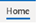

3 Culture and Conduct
3.1 Institute Culture
We are committed to an inclusive, safe, and supportive culture. We value diversity, equity, and inclusion (DEI) and recognize that diversity comes in many forms such as race, gender, sexuality, religion, socioeconomic status, culture, ethnicity, country of origin, physical appearance, political views, age, and disability status. The College of Education and larger University of Oregon also support DEI through various initiatives.
As scientists, we value open communication and (friendly) debate. A safe environment for such discourse must be built upon a foundation of respect, so that people can feel comfortable sharing their ideas and opinions. We believe that a culture in which people can share their honest suggestions and ideas leads to more voices being heard and faster/better scientific progress.
The SEIU Collective Bargaining Agreement (CBA) 2022-2026, Article 64 outlines the tenants of mutual respect that we follow. While the CBA applies to classified employees, mutual respect applies to everyone. Behaviors that contribute to an intimidating, abusive or bullying work environment, will not be tolerated: Link to CBA (see pages 108-110 ). Employees are supposed to report behaviors to their supervisor or an appropriate person within the supervisory chain. Additional resources for reporting at the university level are listed in Section 9.1.
Core values
Innovation: grow and create new approaches, learn from challenges, adapt to change
Collaborative: nurture a sense of collegiality, engage with internal and outside interest-holders, and invest in the overall success of the institute
Respect: engage in interactions that foster trust and positive relationships
Excellence: commit to growth and quality, engage in continual improvement, focus on meaningful contributions, and exceed our own expectations
Integrity: be forthcoming and transparent, follow through on commitments to colleagues and Institute partners
Equity and inclusion: listen, learn, act; honor and seek out diverse voices; be open to new and different approaches
3.2 Communication
Email:
UO email is the primary mode of written communication and should always be used for communication that needs to be documented/recorded/tracked. Here is a link for IT setting up your email client.
Teams:
We use Microsoft Teams for quick back & forth messages, sharing kudos, and other general updates that do not need to be documented/recorded/tracked. Think of using Teams for our inter-office “messaging” or “chatting” – this is typically used for things where you need a quick reply/answer but don’t need a formal email chain. Faculty and staff may also request a Teams phone number if desired.
Zoom:
As a hybrid team, most of our meetings are conducted via Zoom. We prefer to have cameras on when possible, but we understand that people may sometimes have circumstances that require cameras to be off.
Additional:
Undergraduate scholars may also use Canvas to communicate with us (described further in Section 7).
We do not typically use personal cell phone communications, such as calls or texts, unless necessary for particular circumstances or urgent issues. For example, we may communicate via cell phone if it is most convenient during retreat or conference travel, or if an issue requires an immediate response outside of traditional work hours.
General Communication Etiquette
We have members in most US time zones and with varying schedules. Although we work hard, we also support work-life balance and respect each other’s time away from work. We try to be aware of each other’s time zones and we limit communications to members who are on leave.
Email Communication Etiquette
Emails may be sent at any time but, unless already discussed and planned, do not expect a reply outside of business hours in the recipient’s time zone
If you are working after hours and wish to send an email, you may also use the scheduled send feature to send emails during the next business day
Most emails should be responded to within 1-2 business days
For emails that require a longer time for a full response, please acknowledge receipt of the email within 1-2 business days
We have a “3-email rule” where if an email requires more than 3 back and forths, we schedule a Zoom call instead
When sharing documents via email, we prefer OneDrive/Sharepoint links over email attachments
To get the format for a HEDCO Institute email signature, look at this Sharepoint file.
Teams Communication Etiquette
Teams messages are more commonly used for communication where you hope for a quick reply. They should, therefore, be primarily used during both parties’ workday hours.
3.3 Scheduling and Time Off
Scheduling
We use Outlook calendars for scheduling meetings, institute events, and time off. Please block off busy and unavailable time that occurs during your typical working hours on your individual UO Outlook calendar. You do not need to share details when you put personal appointments on your calendar, but please do block off unavailable time so that other members know not to schedule meetings with you at those times. For example, you may write “unavailable” or “appointment” instead of providing specific details regarding a medical appointment.
Unavailable time of less than one working day (e.g., a brief appointment) should be blocked off on individual employees’ calendars. Time off consisting of one full day or more should also be indicated on the shared HEDCO Institute calendar.
Calendar Setup
To add the shared Institute calendar to your Outlook:
Select the calendar icon
Select “Home” 
Select “Browse Groups” (you may need to select at the far right for your screen for the “Browse Groups” option to show up)
Enter the name of the calendar “0365_HEDCO Institute” and select “Join”
Time off
We support work-life balance with time off to recharge, for family reasons, to take care of health needs, etc. Most HEDCO staff have taken vacation, sick days, parental leave, or bereavement leave. The HEDCO Institute observes university holidays and university policies for leave, paid time off, and sick days.
PTO Norms
To submit a request for PTO, email your supervisor for approval as soon as possible
For planned PTO that spans several days (e.g., vacation), consider sending your supervisor a calendar invite for the days you will be out
Please use out-of-office notifications if you are out of the office for more than one day and when you take PTO
When on PTO for more than 1 day, always set an ‘out of office’ auto-response on your email that notifies people you are out of office and the date of your return. During times when an urgent email might come through, always list a backup contact person in your out of office response (and that backup contact should be notified in advance)
For planned business travel, add dates to shared calendar and set an ‘out of office’ auto-response on your email
3.4 Meetings
Staff meetings
We have weekly or biweekly all staff meetings on Zoom. Staff are invited via Outlook calendar in advance, and meeting agendas are posted to the Outlook calendar invite.
Supervisor meetings
Staff typically have weekly 1:1 meetings with their direct supervisor.
Smaller team meetings
Other teams also meet regularly or semi-regularly, including the research team, communications team, and leadership team.
Board meetings
Advisory board meetings occur 3-4 times per year. They may occur in virtual, in-person, or hybrid formats.
Special meetings
Because of our hybrid format, we make an effort to build in fun time together, similar to what employees at traditional workplaces might experience when they see each other “at the water cooler” or taking a coffee or lunch break together. We have holiday gatherings and other informal fun meetings occasionally on Zoom.
Annual retreat
Each fall, all employees typically get together in person for an annual retreat. The retreat encompasses work-related activities (e.g., brainstorming sessions, discussing priorities for the upcoming year), as well as meals or other fun outings.
3.5 Dress Code
The dress code is business casual. UO sweatshirts and shirts are also acceptable for informal meetings.
3.6 Work Structure Norms
All employees are expected to be available and online during their agreed upon work hours. Email and Teams should be regularly checked during work hours. Employees are generally not expected to work on nights or weekends or to check email or Teams outside of their agreed upon work hours. Exceptions are infrequent circumstances when we might have a tight deadline or special event.